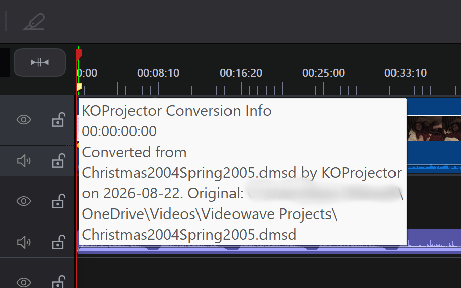

Rescue old home movie projects from video-editing software that no longer runs. KOProjector reads projects made with Roxio VideoWave, Windows Movie Maker 2 and Windows Live Movie Maker, hunts down the photographs and video clips that have been renamed, reorganised and swept into the cloud in the twenty years since, and rebuilds the whole production as a CyberLink PowerDirector project you can open and finish today.
Windows Command line .NET 9 Experimental FreeA family film from 2004 is rarely lost because the video is gone. It is lost because the project — the file that says which clip follows which, where each one was trimmed, what the titles said and where the music came in — was written by an application that will not install on a modern PC. The video is usually still there. The instructions for assembling it are the part that has become unreadable.
KOProjector reads those instructions and writes them out again in a form a current editor understands. It also solves the other half of the problem, which is that nothing is where the project says it is. Folders have been renamed, drive letters have vanished, photographs have been re-cropped and given better names, and everything has moved into OneDrive. You describe those moves once, as rules, and the same rules serve every project you convert.
The result opens in PowerDirector 24 with the clips, trims, transitions, soundtrack, camera moves and titles in place — ready to adjust and produce, rather than ready to rebuild from scratch.
The most up to date version of this information will always be the online version.
Five source formats, spanning about twenty years of consumer video editing, and one destination:
The format is worked out by looking inside the file rather than at its extension. Extensions turn out to be a weak hint: one real collection contained a .dat file that was a compound document, a .dmsd that used a different schema from the .dmsm sitting beside it, and two entirely unrelated Movie Maker formats that shared nothing but a vendor.
When media has moved, the breakage is almost never random: whole folders get renamed or relocated together. That is what makes it tractable. You write a small rules file describing the moves you know about — this drive letter became that folder, this account name became that one, this apostrophe was dropped by a cloud sync — and KOProjector applies them to every path in every project.
Rules are worth writing because each one pays back many times over. In one real collection a single rule for a web folder that had moved into OneDrive accounted for roughly 1,386 photograph references, and one rule correcting a changed user account found 174 of one slideshow's 179 items outright.
You write the rules file once and keep it beside the program. KOProjector looks in its own folder, so if you put the tool somewhere on your PATH with its rules alongside, every conversion from then on is just the project name and where to put the result — no rules to remember, from whatever folder you happen to be in.
Anything a rule cannot reach is then searched for by name in folders you nominate, which handles the files that were tidied into subfolders rather than moved wholesale. Whatever is still missing is reported with everything the project recorded about it — its size in bytes and its exact duration — so that you can go looking through an old backup drive armed with something more useful than a file name.
There is one further tier, for photographs that were renamed but kept their date and time. A camera's mvc2004_11_03_091448.jpg and a phone sync's WP_20041103_091448.jpg share fourteen digits, and it is the digits rather than the prefix that survive a wholesale renaming. It is off unless you ask for it, and it refuses an ambiguous match rather than guessing — in one collection 11 of 122 matching timestamps named more than one file, usually an original sitting beside a downscaled copy. Every other tier can only fail to find something; this one could find the wrong thing, and a wrong photograph in a family film is worse than a missing one, because nothing announces it.
Or you can be asked about them one at a time, with --find. Type where a file went, and if you name a folder rather than a file, that folder — and everywhere beneath it — is searched not only for that file but for every other one still missing. Since media goes missing a folder at a time rather than a file at a time, a slideshow whose two hundred photographs all moved together usually costs a single answer. Every file found that way is named on screen as it is found, so you can see exactly what your answer accounted for rather than wondering why the questions stopped.
And when you have finished answering, it offers to write what you found into your rules file, worked out as the fewest rules that account for it — twenty photographs from one folder become one rule, not twenty. Every rule it proposes is checked against every other answer first, so one that would send some other located file to a place it demonstrably is not never gets written, and the evidence behind each is recorded in its note. That saves you writing JSON by hand, where a single stray quote makes the whole file unreadable and takes every other rule in it with you.
Missing material is split by whether the film actually uses it. Every editor keeps a pool of imported material — PowerDirector calls it "My Media" — and a real project of twenty years' standing carries a surprising number of files that were imported, considered and never used. One of those going missing cannot affect the finished production at all.
So they are listed under a heading that says so, in grey rather than red, and --find never asks you where they went. They are still found if a rule happens to reach them, and still counted — but they are never allowed to make a complete conversion look damaged, which is what a single undifferentiated list of missing files does.
The found material is split the same way, and for a sharper reason. One real project here imported a whole theme library: 296 items, of which the film plays two. Listing them together and marking the unused ones meant the two that mattered were the lines with nothing after them — findable only by noticing the absence of a marker, 291 times over. So what the production uses is a section of its own and comes first, the pool follows for completeness, and the question "what does this film actually need?" is answered by the first few lines instead of by reading three hundred.
The report is colour-coded, and the distinction that earns its keep is between the two greens: the regular one means the file was sitting exactly where the project said, and the brighter one means only a rule found it. The bright entries are the interesting ones — they depend on a rule, so they go missing again if that rule is removed or the folder moves once more. Anything genuinely absent is in magenta with its recorded path in dark red, and the material nobody needs is in grey.
There is one reporting option, --report, and it covers the three questions worth asking of an old project: what shape is it, what is it made of, and what has gone missing? On its own it puts all of that on the screen. Given a file name it is written straight there instead — no redirection needed, and none of the banner or the run summary comes with it:
Name the file .htm or .html and a web page is written — properly coloured, self-contained, ready to open or to send to somebody. Any other extension gives text: plain, or with the colours embedded in it if you asked for --colour always. And --json writes a complete description of the project — every clip with its position and trim points, the transitions, titles, sound and a deduplicated media list — which is enough to redraw the timeline without the project file.
With a wildcard source, the file name takes a wildcard too: --report=*.htm names each page after its own project, so a shelf of projects becomes a shelf of pages in one command. Each page carries the timeline and the source material under links that move between them, and a link back to the index over the lot.
The timeline chart is the quickest way to see the shape of a production before deciding anything about it — what follows what, how long each clip runs, where the transitions fall and where sound sits underneath:
EnglishCottages.pds TIMELINE 20s total, 4 clip(s) |-----------5s-----------|-----------5s------------|-----------5s------------|-----------5s------------| video |EnglishCottage_4-3.png |EnglishCottage_9-16.png |EnglishCottage_16-9.png |EnglishCottage_16-9_Cont…| audio |KaraGuitarChords.m4a ^ ^ ^ at 5s Dynamic Shift 01, 1s ^ at 10s Camera Shutter, 1s (a) = the clip brings its own soundtrack; ~ = the sound fades
A long film does not get squeezed into one unreadable strip. When there is more production than there is width, the chart continues on further sets of rows, as a musical score does, each set carrying its own scale — so a forty-minute film with thirty-four clips stays legible instead of collapsing into a row of single characters. Each transition is named underneath with its length, and a clip too short to be drawn is widened rather than dropped, which is why the chart says not to scale when it has had to do that.
A timeline and a media listing answer questions about one production. There is a different question: which of my projects can I actually open, and what is stopping the rest? That is only worth asking across a collection at once, so it is answered by a single table for the entire run however many projects the wildcard matched — written to the file you name, or gathered into the index when you asked for a page each:
Note the comma. Several patterns can be given at once — the convention Windows itself uses in dir *.txt,*.doc — and a folder written on the first carries to the rest, so D:\Videos\*.dmsm,*.pds searches that one folder for both. It is also the only spelling available: a second pattern separated by a space already means the destination, so *.dmsm *.pds converts every VideoWave production into a PowerDirector one rather than reporting on both. A file whose own name contains a comma — and they exist, Ben's Haircut, May 2007.wmv — is recognised and used as it stands rather than being split into two patterns that match nothing.
Worst first, so the projects needing attention come to the top and the finished ones settle at the bottom where they read as reassurance rather than as noise:
| Project | Media | Report |
|---|---|---|
|
SummerFete2006 .dmsm |
The fete footage is on the disc labelled "Village Fete" in the box of school videos Found 118 of 124 media files. Missing files: D:\Photos 2006\Fete\DSC00412.JPGImage, 2,118,336 bytes, duration not recorded, starts 0:42 (42.15s) ends 0:52 (52.19s) D:\Photos 2006\Fete\DSC00418.JPG Image, 2,004,771 bytes, duration not recorded, starts 3:08 (188.44s) ends 3:18 (198.48s) 4 more in the media pool only — not needed for the production: C:\Users\Old\Music\Brass Band\03 The March.mp3C:\Users\Old\Music\Brass Band\05 Slow Air.mp3 D:\Photos 2006\Fete\DSC00401.JPG D:\Photos 2006\Fete\DSC00402.JPG |
timeline & source material |
|
ChoirConcert2021 .pds |
Found 96 of 97 media files. Missing files: C:\Users\Old\Videos\Concert\03_Finale_20211204_193052000.MOVVideo, 1,884,301,824 bytes, 612.480s, starts 1:04:11 (3851.02s) ends 1:14:23 (4463.50s) |
timeline & source material |
|
WeddingSlideshow2019 .wlmp |
Found 84 of 86 media files — no missing files used in the production. Missing files: 2 in the media pool only — not needed for the production: C:\Users\Old\Music\Wedding\First Dance.mp3D:\Photos 2019\Church\IMG_0042.JPG |
timeline & source material |
|
BeachHoliday2004 .dmsd |
Found 212 of 212 media files. | timeline & source material |
The most useful part of each line is the last of it: where in the finished film the missing item appears. Everything else describes the file that has gone; that describes the hole it left — and the hole can still be looked at, in whatever was produced from the project at the time. A slideshow of scanned negatives makes the point: the file names say nothing at all, but winding the old video to 0:42 shows the photograph that is missing, and whether another would serve in its place. Both forms are given, minutes and seconds to scrub by hand and the raw figure for anything scripted, and a file used more than once is reported at every appearance.
Two more things earn their place. Every entry carries the size and duration the project recorded, so a single line is enough to go hunting through an old backup drive with. And material is split by whether the film actually uses it — so BeachHoliday2004 above is genuinely finished, and SummerFete2006 needs two photographs rather than six files. Pool entries carry no position, because there is no moment to wind to. The Report column links to that project's own page: its timeline, and where every one of its files was found.
That split is why the heading over the pool entries is green rather than grey, while the files under it stay grey. At a glance down a long table the two lists look alike — a row of paths under a row of paths — and the heading is the only thing distinguishing "this film has holes in it" from "these were never needed". The reassurance has to be the part that catches the eye, or the colour is doing nothing.
The count at the top of each cell carries the same distinction in three colours rather than two, because "something is missing" covers two quite different situations. Green: everything is there. Red: the film itself has holes in it. Blue for the third case — WeddingSlideshow2019 above, where files are missing but no missing file is used in the production. That project opens and plays complete. Colouring it red alongside the genuinely broken ones is what sends somebody hunting an old backup drive for a photograph no part of the film shows.
Give --report a pattern with a star in it rather than a plain name and you get the lot — a page for each project, and an index over them carrying the table above:
Read across a folder of two projects, that writes three files:
The kind is in the name on purpose. Four productions in the collection this was built from exist as both a .dmsm timeline and a .dmsd disc project of the same name — and with the bare name, the second page wrote over the first and nothing said so. Christmas2010_dmsm.htm and Christmas2010_dmsd.htm cannot collide. An underscore rather than a dot, so the result is one plain name with one extension.
Reports land beside the projects unless you say otherwise, and for a large collection that is a lot of company — a hundred projects would leave a hundred new files among them. Put a folder in the pattern, as above, and they go there instead. Worth doing for a second reason: anything left in the folder being scanned is looked at again on the next run, and a report is not a project.
The reports folder is created if it is not there, and emptied of its old pages before the new ones are written, so what is in it always describes one run. A stale report is worse than a missing one: rename a project and its old page would otherwise sit there for ever, linked from nothing, looking exactly like a current one. Only the extension being written is touched, only in that one folder, and nothing beneath it — a folder you keep other things in does not lose them because a report happened to be aimed there.
A conversion destination folder is deliberately not created for you, and the difference is the cost of being wrong. A mistyped destination scatters converted projects somewhere nobody thinks to look; a stray reports folder costs a glance and a delete.
The green line at the top of the first row is not something KOProjector worked out. It is a note you wrote into your own rules file, and it appears whenever that project is processed — on the console and in the table both.
The rules answer where did this file go. A note answers the question that comes after it — what do I do about the ones that are gone — and that answer is usually not in any file at all. Which shelf, which labelled disc, which box in the loft: it lives in somebody's memory, and a rules file kept beside the tool is a better place for it. The note appears exactly where the question arises, next to the list of what is missing.
The name is matched with or without its extension and ignoring case, and a * stands for any run of characters — so one entry covers the .dmsm, the .dmsd and the converted .pds of the same production together. Several notes may match one project; all of them appear, in the order you wrote them.
Name the file .htm for the page above, anything else for plain text, or leave the name off and everything goes to the console.
The same problem turns up without any old software involved: the project is last month's, but you moved to a new machine, or the photographs went onto an external drive, or everything was swept into OneDrive. Nothing is wrong with the project except that it is looking in the wrong places.
Give KOProjector a .pds as its source and it writes a copy pointing at where the media actually is, and changes nothing else whatsoever. That is not a claim about intent — it is checked by putting the paths back afterwards and confirming the file is byte-for-byte what it was.
It matters because the alternative would quietly throw things away. Reading a project into a general-purpose model and writing it out again would lose everything that model does not happen to describe: colour grading, masks, audio effects, keyframed opacity, picture-in-picture objects, and any track it did not know about. So the document is edited rather than rebuilt, and only the fields naming your own media are touched. Masks, colour presets and downloaded content are left exactly as they are — those belong to your PowerDirector installation rather than to the film.
Reading a .pds is also the quickest way to answer "what does this project actually depend on?", since --report works on one just as it does on anything else — including the split between the material the film uses and the material only sitting in "My Media", which an established project tends to have a good deal of.
The honest answer is very, with three named exceptions — and KOProjector tells you what they are at the end of every run rather than leaving you to discover them. A run that lost nothing says so, in as many words, instead of printing a warning anyway: a caution that appears every time is a caution people learn to skip, and then they miss the run where it mattered.
What comes across accurately:
The three things that are approximate or absent, and why:
KOProjector is a command-line tool. The general shape is a source project, optionally a destination, and options in any order:
Look at a production without converting anything. Give it just a file name and it reports what the project contains — its schema version, aspect ratio and frame rate (or an honest statement that the format never recorded them), how many clips, transitions, sounds and titles it holds, and how long the finished film runs beside whatever length the file itself claims:
Report on it. The timeline drawn as a chart, scaled to the width of your console — what follows what, how long each clip runs, where the transitions fall and where music sits underneath — then the source material, what the film plays listed first and the rest of the media pool after it, each grouped by the folder the files were actually found in, busiest folder first:
Keep it. Name a file after the option and it goes there instead, as a coloured web page if the name ends .htm:
Do a whole folder of projects at once — a page each, and an index over them saying what every one of them is missing, which is the quickest way to see which are ready to open and which are not:
Leave some out. A source pattern says which kinds to take, but it cannot say except. That is what --exclude is for — a comma-separated list in which each entry is either an exact name or a wildcard, and a list may mix them freely:
So *.* takes every project in the folder and --exclude=*.pds drops the ones that are already conversions. A name given without an extension covers that production in every form — its .dmsm, the .dmsd beside it and the converted .pds together. A bare name matches in any folder; put a slash in an entry and it is matched against the whole path instead.
Convert. Add a destination. If you leave the extension off, .pds is assumed:

Every project written remembers where it came from, as a marker on the timeline at 0:00 named "KOProjector Conversion Info". Hover it in PowerDirector and it tells you: "Converted from Christmas2004.dmsm by KOProjector on 2026-08-22", followed by the full original path. Relinked projects get the same marker, worded for a relink and counting what was rewritten. Years from now that is the difference between a file you recognise and one you do not.
A marker rather than the project's description field, because a marker can be seen. Hovering the small tag on the ruler at 0:00 gives the panel shown here: the heading is the marker's name, and everything below it is the comment. The description field carries the same sentence as well, and it is free text that nothing reads, but it is empty in all 51 hand-made projects measured and where PowerDirector displays it is anybody's guess. A note nobody can find is not much of a note.
The marker is stored the way PowerDirector stores its own: an entry in the timeline's ruler-marker list, at time zero, with a name and a comment. That means it is a normal marker in every respect — you can read it, drag it, edit its text or delete it, and nothing depends on it. Markers you put there yourself are kept, and converting the same project again replaces our note rather than stacking another beside it.
A slideshow is opened out into the photographs it is made of. PowerDirector shows a slideshow as a single clip and keeps its pictures on a timeline of their own; both are read, so the photographs appear on the chart where they belong and are never mistaken for material nothing plays. The stretches where the style animates on its own are kept too, at their true length and labelled — without them one real production read four minutes shorter than it actually plays.
Leave the media pool behind. Every editor keeps a pool of imported material — PowerDirector calls it "My Media" — and a project of twenty years' standing carries a surprising amount that was imported, considered and never used. One measured project holds 296 items and plays two of them:
That costs nothing until the material lives in cloud storage, where PowerDirector fetches whatever its library names — so opening a two-clip production can pull down hundreds of files it never shows. It works when converting and when relinking a .pds, which is where the pool actually lives: measured across one collection, the VideoWave and Movie Maker projects had no unused media at all, while 41 of 53 PowerDirector projects carried 2,429 pool-only files between them.
The timeline is untouched. Only the library changes, and identifiers are not renumbered, so every clip still points at exactly what it did before. That is checked rather than asserted: relinking one project both ways and comparing them, the timeline comes out character-for-character identical while the library goes from five entries to three.
Convert a whole folder at once. Wildcards work in the source, the destination and the description, with the * in a destination standing for each project's own name and kind. --quiet reduces each project to a single line, which is what you want when converting dozens — a page of output per project buries the one that went wrong:
Naming one output file for several projects is refused rather than left to overwrite itself, with the pattern to use instead. Windows hands a program its command line unexpanded, so the tool does the expanding — only the folder you name, never the tree beneath it, and in name order so two runs can be compared line by line. Anything a wildcard matches that is no reader's idea of a project is passed over quietly, so *.* means "every project here" and nothing else.
A bare *.pds destination becomes *_CONVERTED.pds, and a later run passes over files already named that way: converting a conversion only copies it, and *.dmsm,*.pds *.pds would otherwise fill the folder with copies of copies that nothing tells apart. Write a pattern with anything of your own in it, such as *_Final.pds, and it is used exactly as you wrote it.
Keep the colours in a captured file. Colour normally disappears the moment output is redirected, because it is a property of the console rather than part of what the program writes. --colour always writes it into the output itself:
Naming the file after the option instead sidesteps redirection altogether, and is the only way to get the report without the banner and the run summary wrapped around it.
Be asked about anything still missing, and have the answers used in the project that is written:
Use a different rules file for a particular job. The one beside the program is only the default; naming another overrides it, which is what you want when a batch of projects came off a different machine with its own folder history:
A folder can be named instead of a file, in which case a MediaPathRules_<machine>_<user>.json inside it is preferred over a plain MediaPathRules.json — so one folder can hold the rules for several machines and each finds its own.
There are a few more: --json writes a complete description of the project for inspection; --transitions supplies your own effect mapping in place of the built-in one; and --no-titles converts without titles, which is the quickest way to find out whether a title is behind a problem opening the result. --help explains them all.
A command line it cannot make sense of is refused rather than partly obeyed. A mistyped option, a missing value, an option given twice — each stops the run and says why, with a suggestion where there is an obvious one:
Paths in the output are shortened using %ONEDRIVE%, %ProgramFiles% and the like in place of real folder names. That is partly for readability and partly for privacy: it keeps your account name out of a file you might well end up sending to somebody when asking about an awkward project.
VideoWave .dmsm and .dmss, Roxio disc projects .dmsd, Movie Maker 2 .MSWMM, Live Movie Maker .wlmp, and PowerDirector .pds.
A disc project becomes one film with its titles end to end, as pressing "play all" would have given you.
An existing PowerDirector project gets new paths and nothing else — proved byte-for-byte, so no effect or grade is lost.
The format is worked out by looking inside the file, because extensions in a twenty-year-old collection lie.
Describe how your folders moved once, keep the file beside the program, and it is found automatically every time.
Files tidied into subfolders rather than moved wholesale are found by name in folders you nominate.
Name one folder and it answers for every missing file it can, listing each one it finds without asking again.
What you find once is offered back to your rules file as the fewest rules that explain it, each checked against every other answer.
Wildcards in the source, the destination and the description, so one command converts a shelf of projects.
Every clip boundary lands on a whole frame at the project's own rate, whether that is 25, 29.97 or something else.
Portrait pictures are letterboxed, measured from the file itself, with camera rotation honoured.
Clip soundtracks and separate music, with volume, fades and any envelope drawn by hand.
Matched to their nearest equivalent, with a cross-fade for anything unrecognised — and it says which.
Slow moves across photographs are rewritten as PowerDirector camera moves, ready to fine-tune.
The words, line breaks, timing, placing and animation — so the text is there to adjust rather than retype.
See the shape of a production before converting it — continued over further sets of rows, like a score, when one will not hold it.
Name a report .htm and you get a coloured page rather than console text — ready to open, keep or send.
--report puts every project in one table with what it cannot find, worst first — so you can see which are ready to open.
Two greens: one for a file that was where it should be, a brighter one for a file only a rule found.
What the film plays is listed first and apart; material sitting unused in "My Media" follows in grey, and is never asked about.
Every run ends by naming what did not make the journey — or saying plainly that nothing did.
KOProjector is experimental and not yet released. It converts real projects successfully — productions from 2003, 2004, 2005 and 2018 have all been converted and opened in PowerDirector 24 — but it is a command-line tool aimed at a fairly specific problem, and it is still learning new things about these formats as it meets more of them.
The collection it has been built against runs to a little over seventy projects in five formats, twenty years of family films and community productions, and roughly two thousand pieces of source material scattered across folders that have been renamed, reorganised and moved into the cloud several times over. Nearly all of it is now found automatically.
If you have a shelf of old VideoWave or Movie Maker projects you would like to rescue, do get in touch — knowing which formats and which vintages people actually have is exactly what decides what gets built next.
Requires Windows 10 or later, and CyberLink PowerDirector to open what it produces.
KOProjector is free software.
← Back to KLO Software